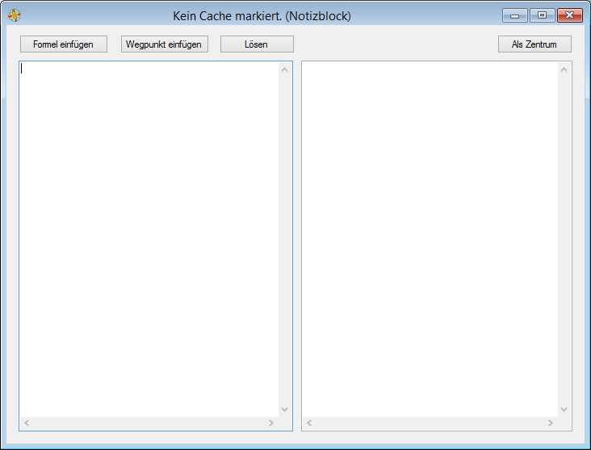

| GAPP: Globalcaching APPlication |
|
| GAPP: Globalcaching APPlication |
Das Programmfenster besteht aus einem Eingabebereich für die Formeln (Textbox links), einem Ausgabebereich für die Berechnungen (Textbox rechts) und den Schaltflächen "Formel einfügen", "Wegpunkt einfügen", "Lösen" und "Als Zentrum".

Die Textbox auf der linken Seite des Programmfenster dient der Eingabe von Formeln. Nähere Hinweise zur Eingabe finden sich auf der Seite "Formeleingabe".
Die rechte Textbox wird vom Formellöser mit den Ergebnissen der Formelauswertung befüllt, nachdem die Schaltfläche "Lösen" gedrückt wurde.
(column3)